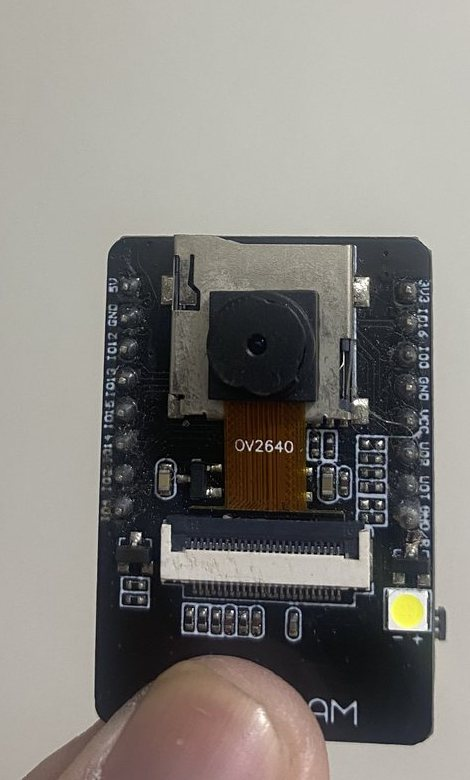
01 / 05 · Capture
Capture
Two ESP32-CAM feeds, two IR beams at the door and a NEO-7M GPS fix.
AI + IoT · Public buses · Local-first
SafeTransit watches the driver for signs of drowsiness, counts every passenger through the door, and puts the whole trip on one dashboard — before a warning becomes an incident.
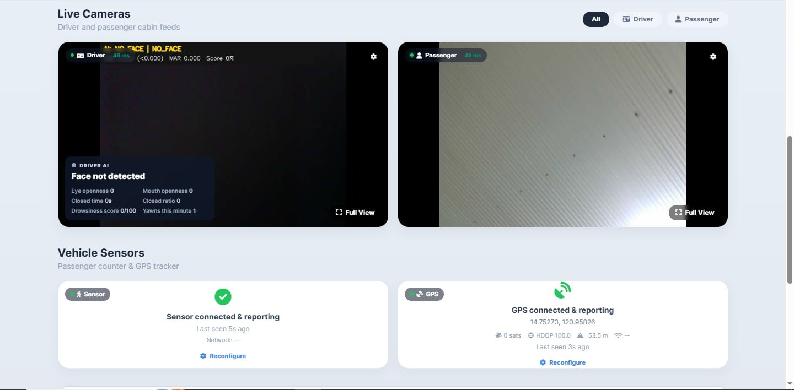
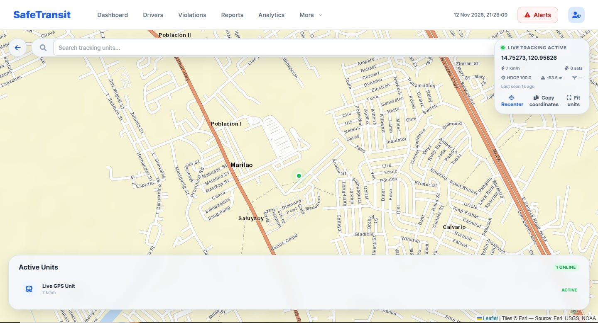
Follow the trip in order, or jump to the screen you need.
Two safety problems that are usually counted by two different people.
A driver's alertness and a bus's passenger load are watched separately, if at all. SafeTransit puts the driver camera, the door count, GPS, alerts and records on one local platform.
Public utility buses run on long shifts and tight turnarounds. A driver can be fatigued without saying so, and a conductor can lose count during a crowded stop. Both failures are quiet until something goes wrong. SafeTransit makes both visible while the trip is still running.
The dashboard is a Django app on a laptop or small host on the vehicle's network. Two ESP32-CAMs stream the driver and passenger cabin; an ESP32 sensor node counts the door; a NEO-7M GPS node posts the fix; two vision models run on the host CPU — MediaPipe Face Landmarker for the face and EfficientDet-Lite0 for objects. The mobile app talks to the same server, so the conductor sees the same trip the operator does.
“The warning is only useful if it arrives while there is still time to act.”
Driver and passenger feeds with the AI overlay on the dashboard, not a separate screen.
Two IR beams at the door turn an entry or exit into a live capacity number.
A buzzer in the cabin, a dashboard alert, an email, and a saved clip of the event.
Analytics, reports, violation records and driver scorecards stay after the trip ends.
Capture on the vehicle, process locally, decide on the dashboard, and keep the record after the shift.
Local-first. Cameras, counting, AI and records stay on the vehicle host; email is the only outside service.
Bench footage, not a render.
Two vision models read the driver feed: MediaPipe Face Landmarker for eye, mouth and head metrics, and EfficientDet-Lite0 for phone, bottle and cup objects. A threshold becomes something the driver and the operator can act on.
478 face landmarks drive eye openness, mouth openness, PERCLOS, closed time and head pose. The hand task adds the ear/mouth geometry used by the behaviour rules.
A COCO object detector for the phone, bottle and cup in the frame. Its labels are combined with hand landmarks to tell phone call, texting and drinking apart.
Four moments the system is built around.
The web dashboard and the mobile app follow the same trip: a driver is checked in, the door is counted, the cabin is watched, and the shift leaves a record.
A six-question self-assessment produces a readiness score, followed by a five-question knowledge quiz. The flow then asks for a face scan and, where available, an ID scan; the operator assigns the active driver on the dashboard.
Read the functional evidence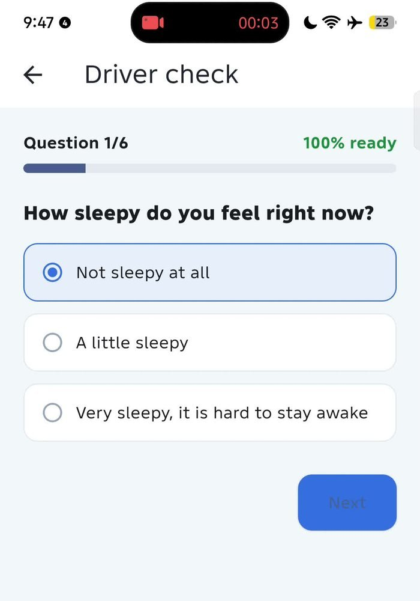
Two IR beams sit across the doorway. The direction comes from which beam breaks first; a debounce and a stuck-sensor fallback keep a misaligned module from freezing the count.
See the capacity meter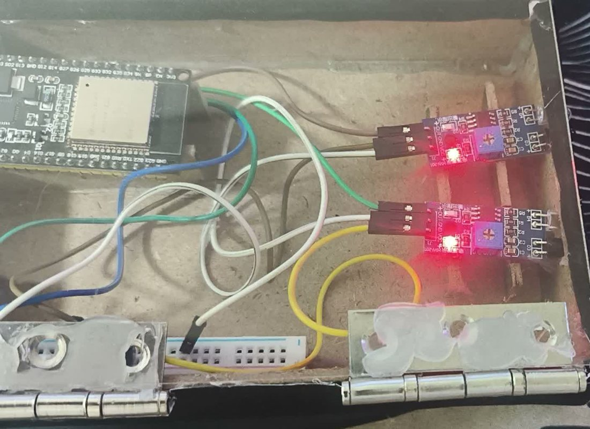
The driver camera feeds two models on the host: MediaPipe Face Landmarker for drowsiness and EfficientDet-Lite0 for objects. Both update the live overlay, while GPS and device health update beside them. A crossing sounds the buzzer and raises the alert.
See the hardware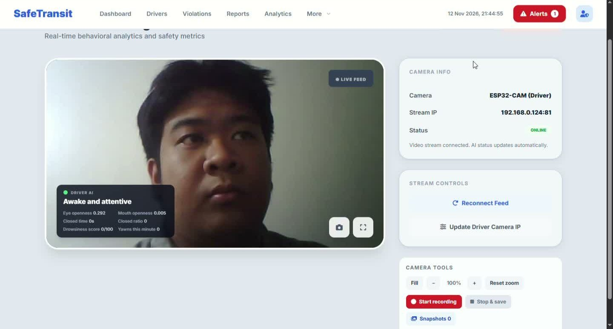
Analytics and reports turn the trip into safety scores, alert frequency, passenger trends and driver scorecards. Violations can be filtered, exported and reviewed after the shift.
See the record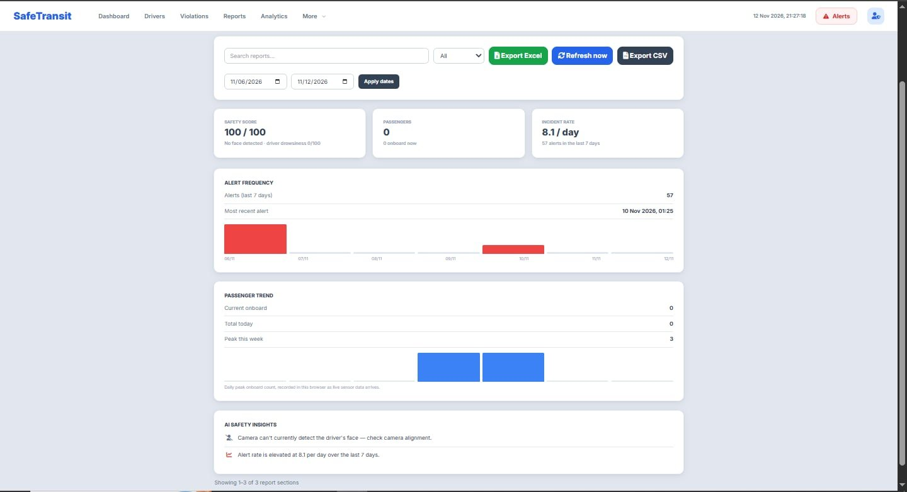
The driver is a record, not a name in a list.
Profiles, registration and identity sit before the trip. The web dashboard keeps the driver record and scorecard; the phone handles the form, the ID scan and the face scan.
Low-cost parts, accessible on the bench.
Two cameras, one sensor node and one GPS module. Everything is off-the-shelf, documented and replaceable — the opposite of a sealed black box.
Camera resolution, cabin lighting, Wi-Fi congestion and GPS obstruction all affect what the system can see. Those limits are documented rather than hidden.
The operator's whole trip, on one screen.
The web dashboard is where the cameras, the count, the map and the device health meet. It is built for a quick glance, not a click-through.
Live cameras on the left, capacity and route on the right, device health underneath. If a camera drops, the card says so; if a beam sticks, the sensor page says which one.
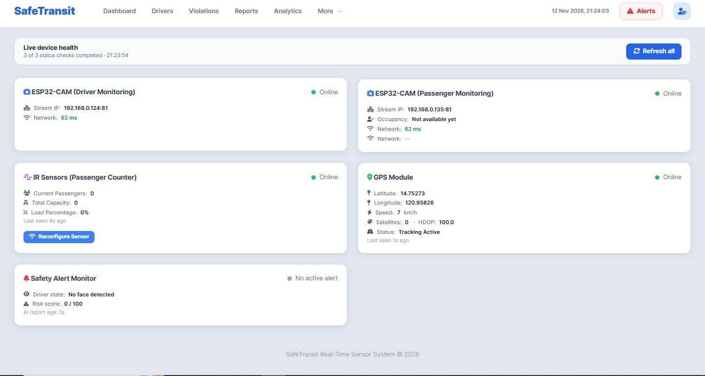
The conductor does not need the laptop.
The Android app is a companion, not a second product: it finds the same server, shows the same feed and raises the same alert.
The app opens on the live cameras, with the passenger count and pre-shift access one tap away. If the server moves, the app finds it over mDNS, scans the subnet, or accepts a manual address.
safetransit.local, a local subnet scan, or a typed IP.
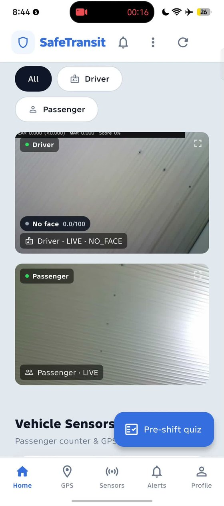
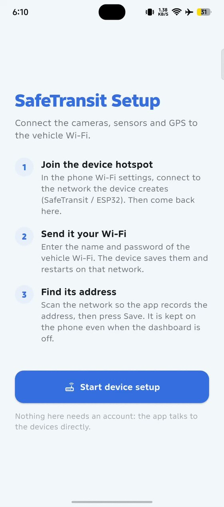
The shift ends; the evidence does not.
Analytics and reports turn raw events into a safety score, a passenger trend and a driver record that an operator can actually review.
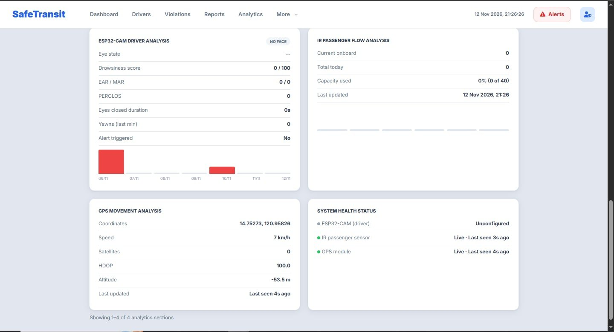
The camera and the pre-shift check feed one violation record. Each event carries a label, a timestamp and, when a clip is available, the footage. The end-of-shift report rolls them up per driver.
Eyes closing for a sustained period; eye openness, closed time and PERCLOS cross the driver's calibrated threshold.
A danger stage rather than a warning: the buzzer and dashboard alert fire immediately and the clip is kept.
Mouth openness is counted as a yawn; repeated yawns raise the drowsiness score even before the eyes close.
A hand held at the ear while the vehicle is moving. The clip is labelled PHONE_CALL.
A phone held in the hand away from the ear. A head-down posture can also be caught as distracted.
A hand at the mouth with pinched fingers. This is a geometry heuristic, not a trained cigarette detector.
A bottle, cup or can in the hand moving to the mouth; the label is DRINKING.
Head turned away from the road or tilted down beyond the calibrated angle for long enough to count.
A failed readiness check or a missing quiz pass blocks the shift until the driver completes it.
Honest scope. Phone, smoking, drinking and distracted labels are geometry heuristics. Drinking from a bottle, eating, or resting a hand on the chin can trip them; the full limits are in the evidence page.
Three clips from the bench build: the AI label changes, the alert is raised, and the event is saved to the record.
Every module that is actually in the build.
A compact map of the modules: what watches, what counts, what alerts, what records, and what the operator can do afterwards.
Driver and passenger feeds with camera health.
02Nine labels from MediaPipe Face Landmarker + EfficientDet-Lite0.
03Quiz, face scan, ID scan and automatic driver switch.
04IR entry/exit with a 40-seat capacity meter.
05Live map, speed, satellites and fix age.
06Buzzer, dashboard alert, email and saved footage.
07Score, flags, recent activity and scorecard PDF.
08Per-driver totals, risk bands and exports.
09Review a finished shift, then flag or clear it.
10Safety trends, passenger flow and CSV/Excel/PDF.
11Roles, approval, backup, restore and system logs.
12Android app, mDNS discovery and device setup.
Accounts, devices and a way back.
The practical parts of running SafeTransit: who gets in, how a device is found, how a database is backed up, and where to look when something is missing.
Screens use demo accounts. Use the arrows, the dots, or the ← → keys.
One clip per page.
Twelve pages, one task each. Every clip has an explanation of what the screen is doing, so the page reads like a walkthrough instead of a wall of thumbnails.
Use the arrows, the dots, or the ← → keys. Playing a clip and moving on pauses the previous one.
The alert leaves the dashboard.
Auto-emailing is easy to claim. These are the three screens that show it: the operator’s decision, the report the driver receives, and the message sitting in Sent.
Demo accounts: the addresses and driver record belong to the project team.
The evidence companion
The documentation page walks through every ISO/IEC 25010:2023 quality characteristic, names the implemented functions, and states the limits of this prototype without assigning a rating.